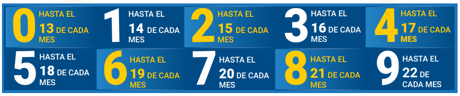

IMPUESTOS IVA E IT
IMPUESTOS A LAS TRANSACCIONES
Es un impuesto que aplica a cualquier tipo de persona que tiene ingresos. Grava el 3% de todo ingreso bruto, o sea, el ingreso sin ningún descuento. El Impuesto a las transacciones IT se lo puede compensar con el impuesto anual IUE (Impuesto a las Utilidades de las Empresas).
Comercio.
Profesión.
Industria.
Oficio.
Alquiler de bienes.
Contratación de obras.
Prestación de servicios.
Transferencia a título gratuito de bienes muebles,inmuebles y derechos.
Todas las personas naturales o jurídicas, que realicen o participen en alguna de las actividades descritas anteriormente.
Es el 3%, esta alícuota se aplica sobre el total de los ingresos brutos de un período (mes), por la actividad gravada.
Se declara cada mes, de acuerdo al último dígito de NIT:
Se declara en el Formulario 200 V.3 (Versión resumida o extendida). Los pagos deben realizarse en cualquiera de las Entidades Financieras autorizadas.